Снятие
Отсоединить жгут проводов отрицательной клеммы Аккумуляторная батарея.
Снять подушку безопасности водителя и рулевое колесо. См.: Подушка безопасности водителя Рулевое колесо
Снять верхний кожух рулевого замка, нижний кожух рулевого замка.
Снять узел переключателя передач на рулевой колонке и поворотный контакт. См.: переключатель передач на рулевой колонке Снятие и установка узла переключателя передач на рулевой колонке
Снять нижнюю защитную панель со стороны водителя.
Отсоединить 3 кабельных фиксатора жгута проводов на рулевой колонке (в точках ①, ②, ③).
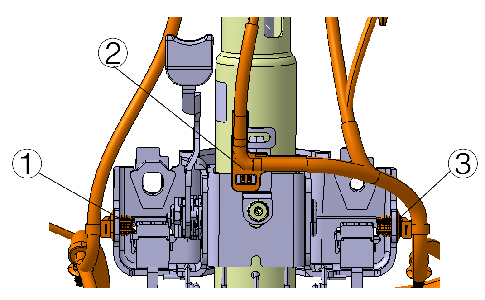
Отсоединить силовой жгут проводов автомобиля и жгут сигнальных проводов, подключаемые к контроллеру EPS (розовые зоны на рисунке ниже).
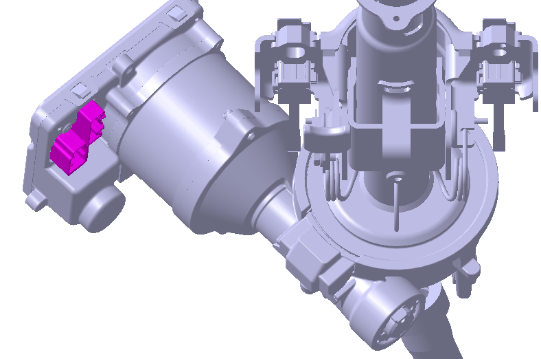
Открутить болт крепления промежуточного рулевого вала к рулевому механизму (показан розовым цветом на рисунке ниже). Крутящий момент: 56 ± 3 N.m
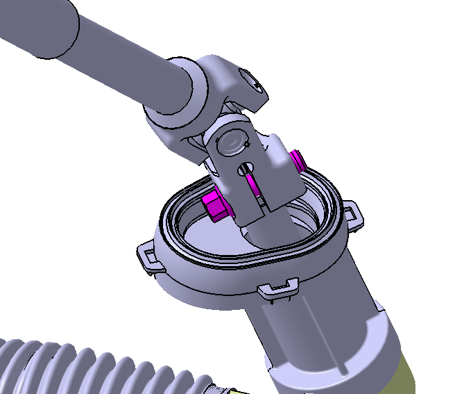
Извлечь вилку промежуточного рулевого вала (показана серым цветом на рисунке ниже) из рулевого механизма (показан розовым цветом на рисунке ниже).
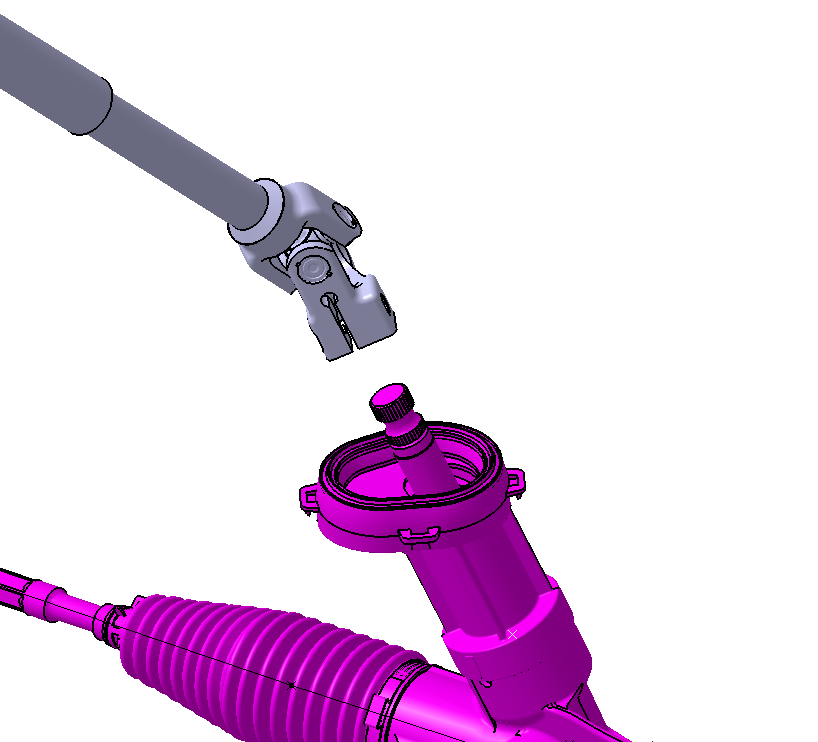
Открутить болт крепления нижнего монтажного узла верхнего рулевого вала (показан розовым цветом на рисунке ниже). Крутящий момент: 24 ± 3 N.m
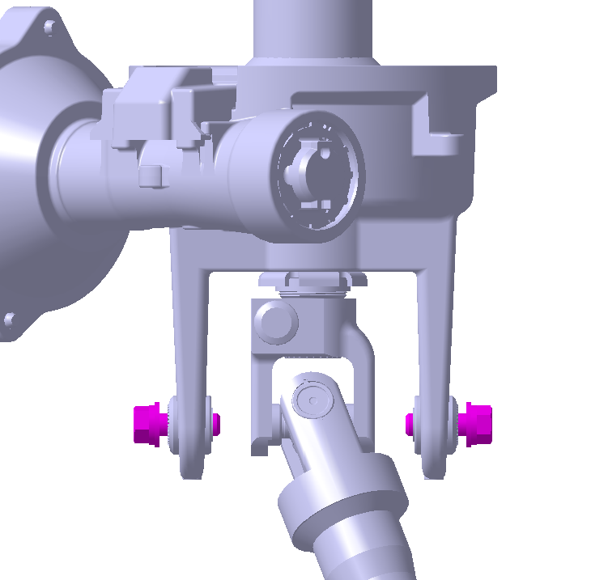
Открутить две гайки крепления верхнего монтажного узла верхнего рулевого вала (показаны розовым цветом на рисунке ниже). Крутящий момент: 24 ± 3 N.m
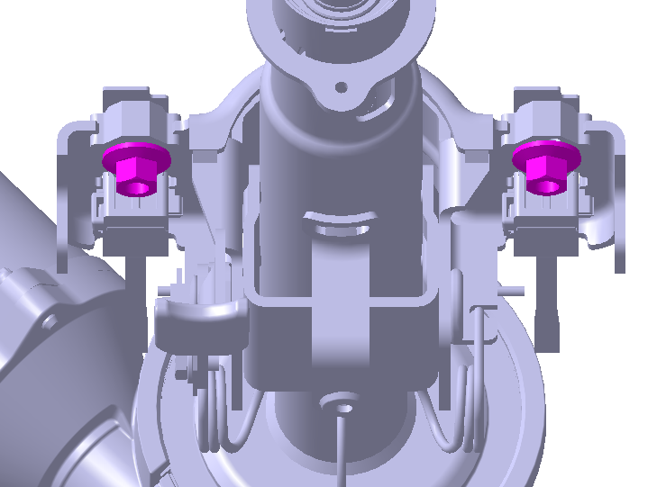
Извлечь Узел рулевой колонки из кронштейна рулевого управления.
Установка выполняется в порядке, обратном снятию.
После завершения замены Узел рулевой колонки необходимо сначала выполнить прошивку программного обеспечения автомобиля, затем выполнить регулировку углов установки колес, калибровку центрального положения и запись конфигурационного кода, и в завершение — обучение EOT.
Прошивка программного обеспечения (применимо к автомобилям с разной программно-аппаратной частью)
Получить программное обеспечение, распаковать его, очистить файлы на карте памяти и скопировать распакованное программное обеспечение на карту памяти.
Убедившись в том, что питание автомобиля включено, подключить мини-блок к порту OBD.
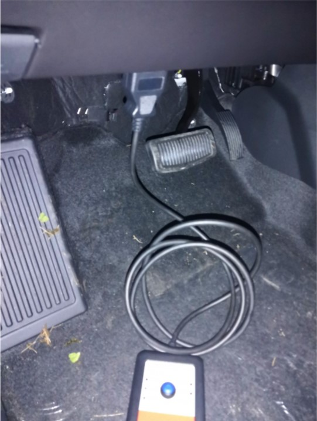
Индикатор питания мини-блока загорится зеленом цветом, что указывает на успешное подключение; нажать кнопку пуска для запуска прошивки программы.
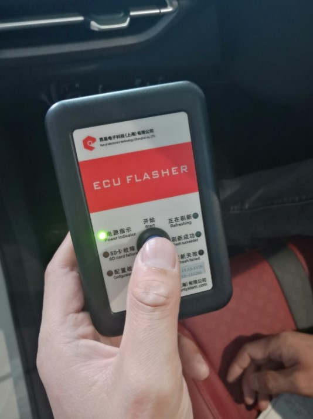
В процессе прошивки зеленый индикатор кнопки "Выполняется прошивка" мигает.
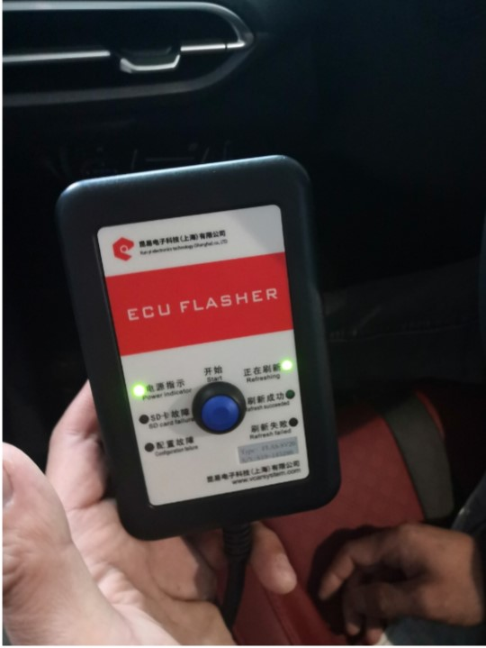
После завершения прошивки кнопка "Прошивка успешна" загорается зеленым цветом.
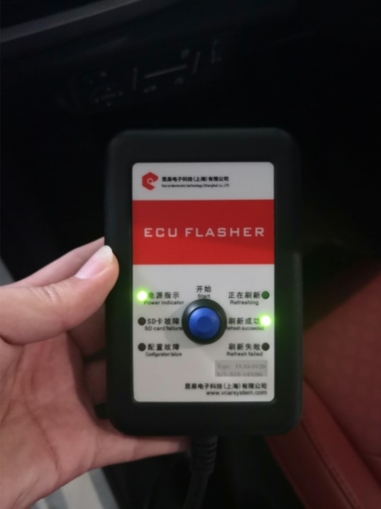
Если в процессе прошивки происходит сбой и загорается красный индикатор, повторить шаги 1-4 выше.
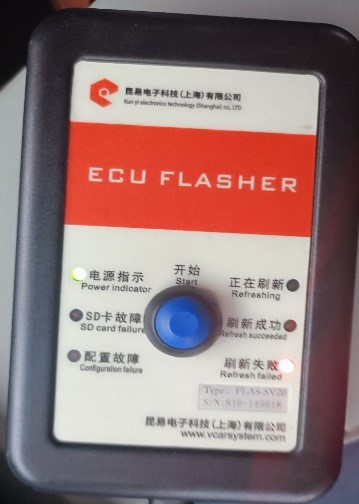
После завершения прошивки программного обеспечения необходимо выполнить регулировку углов установки колес автомобиля, затем выполнить для EPS "калибровку центрального положения" и "конфигурацию после схода с конвейера". См.:
Требования к калибровке Метод калибровкиПосле выполнения вышеуказанных операций необходимо выполнить обучение EOT для автомобиля; конкретный метод: повернуть рулевое колесо до упора влево и удерживать ≥ 1 секунду, затем вернуть в центральное положение; повернуть рулевое колесо до упора вправо и удерживать ≥ 1 секунду, затем вернуть в центральное положение.